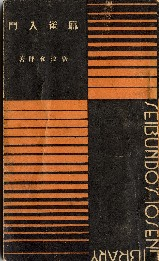

戦前、誠文堂という出版社があった。実用書系の出版社なので、洋裁・料理、囲碁将棋などの本を出版していた。その誠文堂が昭和５年から７年にかけて十銭文庫というシリーズを出版した。十銭文庫は現在で云えば百円文庫というところ。百円なので、普通の文庫の２／３くらいのサイズ。実用書系の出版社であるから、その内容も多種多様。とうぜんその中には当時大ブームであった麻雀も出版されている。
広津 和郎 麻雀入門 S5.9.1
広津 和郎 麻雀必勝法 S7.6.1
川崎 備寛 麻雀・高等新戦術 S6.2.25
川崎 備寛 麻雀、早あがりとガメクリ法 S6.3.1
空閑 緑 麻雀スピード上達法 S6.1.15

書影は左が広津和郎「麻雀入門」、右が空閑 緑「麻雀スピード上達法」
十銭文庫に名を連ねている３人のうち川崎備寛は、戦後も「麻雀の打ち方」、「麻雀の勝ち方」というベストセラーのほか、さまざまな本を著している。しかし広津和郎 、空閑 緑となると、この２冊が代表作と云って良い。
しかし広津和郎はココでコメントした通り、「チョンチョン」という言葉の生みの親。そして空閑 緑は、日本麻雀草創期において、もっとも大きな役割を果たした人物である。そこで十銭文庫の麻雀シリーズは簡単な入門書、あるいは戦術書であるが、そういう二人の麻雀書として非常に貴重な存在となっている。
しかし見た目が簡単な本であるため、むかしは千円くらいで入手可能であった。ところがだんだん値が上がり、今では数千円する。(-_-) まぁ仕方がないと思っていたが、今年の春
７百円で見つけた。
（おお、これは掘り出し物）と、即購入した。ところが７月、別な古書店で１万円の値段がついているのを見つけた。（ムチャクチャな値段をつけるな....）とさすがにあきれた。最近は古書店も、昭和初期の麻雀本と云うだけでムチャクチャな値段をつける。
|